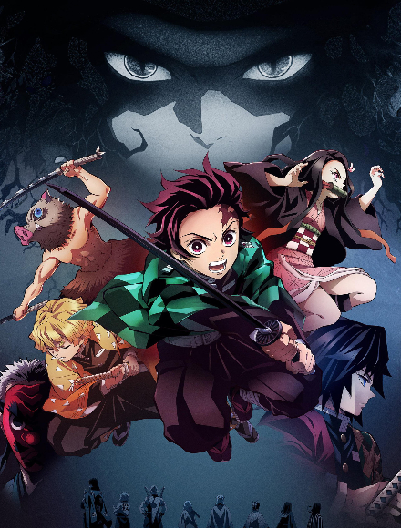

KIMETSU NO YAIBA
Demon Slayer: Kimetsu no Yaiba is an anime series set in Taisho-era Japan, following the story
of Tanjiro Kamado, a kind-hearted boy who becomes a demon slayer after a tragic encounter
with demons that kills his family and transforms his sister, Nezuko, into one. The series combines
breathtaking animation with intense action and emotional depth, exploring themes of family, loss,
and perseverance.
Tanjiro joins the Demon Slayer Corps, a group dedicated to protecting humanity from demons.
As he trains and battles various demons, each with unique powers and tragic backstories, he
also seeks a cure for Nezuko, who retains her humanity despite her transformation. The series is
known for its stunning visuals, particularly during fight scenes, and its well-developed characters,
making it a favorite among anime fans.
WATCH HERE